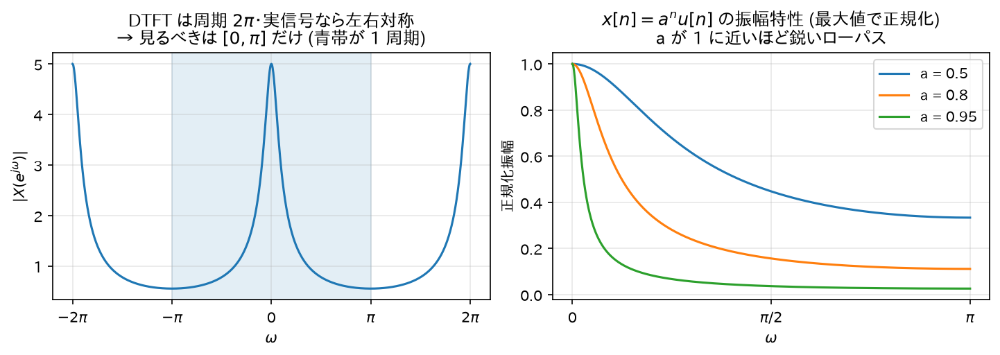

Chapter 04
DTFT（離散時間フーリエ変換）
「フィルタの周波数特性」を正確に定義する道具が DTFT である。 Z 変換（05 章）は DTFT の拡張なので、まずここを固める。
1. 定義
信号\(x[n]\)の DTFT (Discrete-Time Fourier Transform):
（\(\sum_n |x[n]| < \infty\)なら級数は絶対収束し、DTFT は存在する。）
直感
\(X(e^{j\omega})\)は「信号\(x[n]\)の中に、周波数\(\omega\)の回転成分\(e^{j\omega n}\)がどれだけの量と位相で含まれているか」を測る内積である。
- \(e^{-j\omega n}\)を掛ける = 信号を逆回転させて、周波数\(\omega\)の成分だけを「静止」させる
- 全時刻で足す = 静止した成分だけが同じ向きに積み上がり大きな値になる。他の周波数成分は回転したまま足されるので打ち消し合ってほぼ 0
「合唱の中から特定の人の声だけ聞き取るために、その人のリズムに合わせて首を振る」ようなイメージ。
記法について
引数を\(\omega\)でなく\(e^{j\omega}\)と書くのは、05 章の Z 変換\(X(z)\)に\(z = e^{j\omega}\)を代入したものが DTFT に一致するから。つまり DTFT = Z 変換を単位円上で評価したもの（先取り）。
2. DTFT の周期性(導出)
DTFT は必ず周期\(2\pi\)の周期関数。∎
直感: 01 章で見たとおり、離散信号では\(\omega\)と\(\omega + 2\pi\)は同じ信号を表すので、スペクトルも同じ値になるしかない。 これが「デジタルフィルタの周波数特性は\(0 \leq \omega \leq \pi\)だけ見ればよい」理由 （実係数なら\(|X(e^{-j\omega})| = |X(e^{j\omega})|\)の対称性もあるため、負側も冗長）。
3. 逆変換の導出
主張
準備: 複素指数の直交性
任意の整数\(m\)について次を計算する:
場合 1:\(m = 0\) — 被積分関数は 1 なので\(I(0) = \frac{1}{2\pi} \cdot 2\pi = 1\)。
場合 2:\(m \neq 0\) — 原始関数は\(\frac{e^{j\omega m}}{jm}\)なので:
（\(m\)が 0 でない整数なら\(\sin(\pi m) = 0\)。）
まとめると:
直感: 回転する複素指数を一周期分積分すると、ちょうど円を整数周して打ち消し合い 0 になる。回らない (\(m=0\)) ときだけ 1 が残る。
本体の導出
逆変換の右辺に DTFT の定義を代入する（総和のダミー変数を\(k\)にしておく）:
積分と和を交換（絶対収束を仮定）:
（最後は 01 章のインパルス分解の式。）
直感
逆変換の式は「信号は、あらゆる周波数の回転成分\(e^{j\omega n}\)を、重み\(X(e^{j\omega})\)で混ぜ合わせたもの」と読める。 DTFT が「分解」、逆 DTFT が「合成」。
4. 畳み込み定理(導出) — フィルタリングの周波数領域での姿
主張
導出
和の順序を交換し、指数を\(e^{-j\omega n} = e^{-j\omega k} e^{-j\omega (n-k)}\)と分解する:
内側の和で\(m = n-k\)と変数変換（\(k\)固定で\(n\)が全整数を動けば\(m\)も全整数を動く）:
直感（これがフィルタ理論の中心的な絵）
時間領域の畳み込み（面倒な計算）は、周波数領域では単なる掛け算になる。
各周波数成分ごとに見れば、フィルタは「その周波数の倍率\(H(e^{j\omega})\)を掛けるだけ」の装置である （02 章の固有関数の議論と完全に整合する）。イコライザーのスライダーそのもの。
時間領域: x[n] ──[畳み込み h]──→ y[n] （計算はしんどい）
↕ DTFT ↕ DTFT
周波数領域: X(e^jω) ──[× H(e^jω)]──→ Y(e^jω) （ただの掛け算）5. よく使う DTFT の性質(導出付き)
(a) 線形性
(b) 時間シフト
\(m = n - n_0\)と置換:
直感: 時間の遅れは、スペクトルの大きさを変えず位相だけを周波数に比例して回す（\(-\omega n_0\)）。 「遅延 = 線形位相」という事実は位相特性を読むときの基準になる。
(c) 実信号の共役対称性
\(x[n]\)が実数のとき:
（実数\(x[n]\)は共役をとっても変わらないため。） よって\(|X(e^{-j\omega})| = |X(e^{j\omega})|\)（振幅特性は偶関数）、\(\angle X(e^{-j\omega}) = -\angle X(e^{j\omega})\)（位相特性は奇関数）。∎
6. 例: 1 次の指数減衰信号の DTFT(導出)
IIR の最小構成要素になる信号\(x[n] = a^n u[n]\)（\(|a| < 1\)）を変換する:
これは公比\(r = a e^{-j\omega}\)の等比級数。\(|r| = |a| < 1\)なので収束し（02 章の公式）:
振幅特性を計算する（\(a\)は実数とする）:
（\(e^{j\omega} + e^{-j\omega} = 2\cos\omega\)を使用。）
\(0 < a < 1\)の場合の挙動:
- \(\omega = 0\):\(|X|^2 = \dfrac{1}{(1-a)^2}\)… 最大（分母が最小）
- \(\omega = \pi\):\(|X|^2 = \dfrac{1}{(1+a)^2}\)… 最小
つまりローパス特性。\(a\)が 1 に近いほど\(\omega=0\)でのピークが鋭くなる。 07 章で見る 1 次 IIR ローパスフィルタの周波数特性はまさにこれである。
